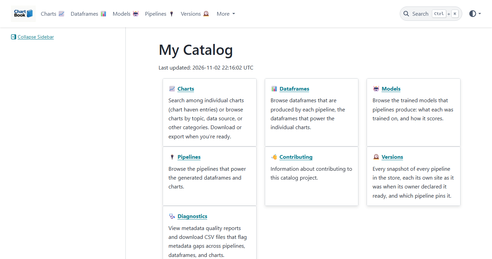
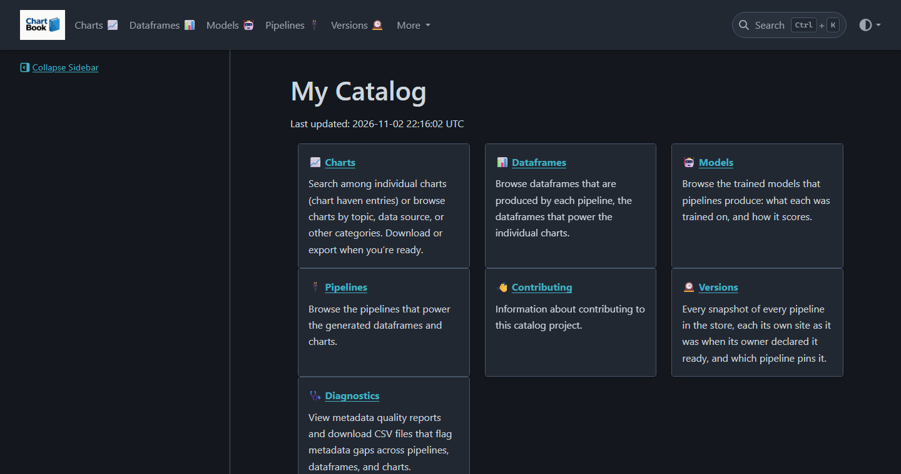
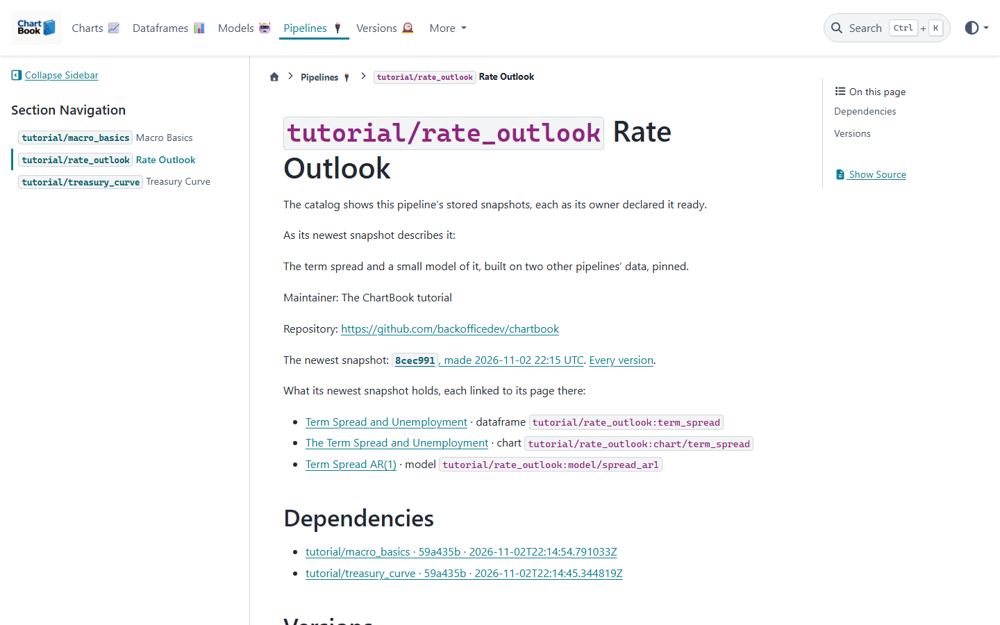
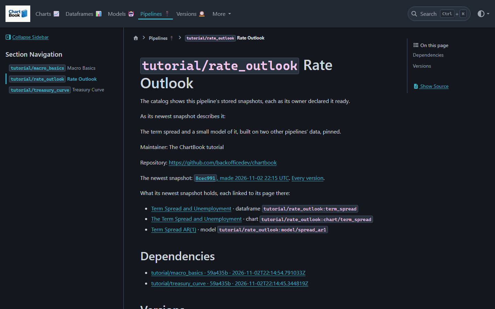
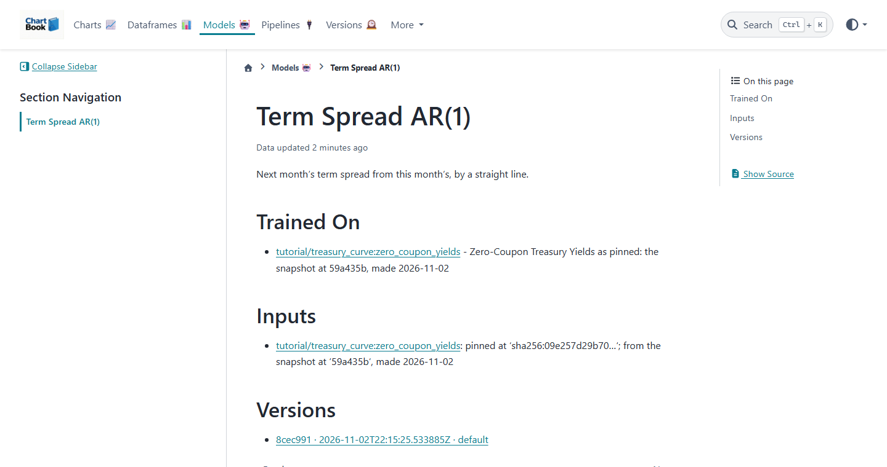
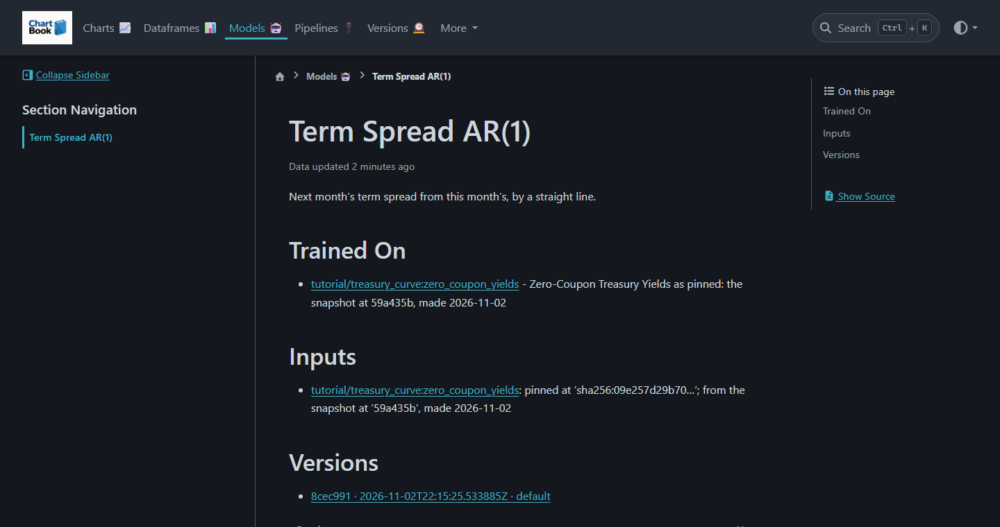
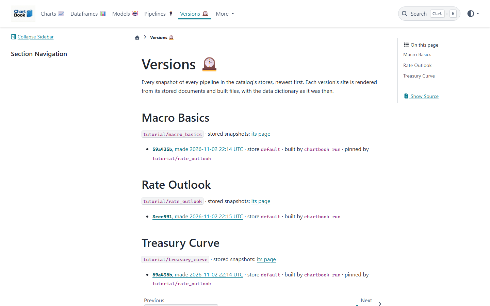
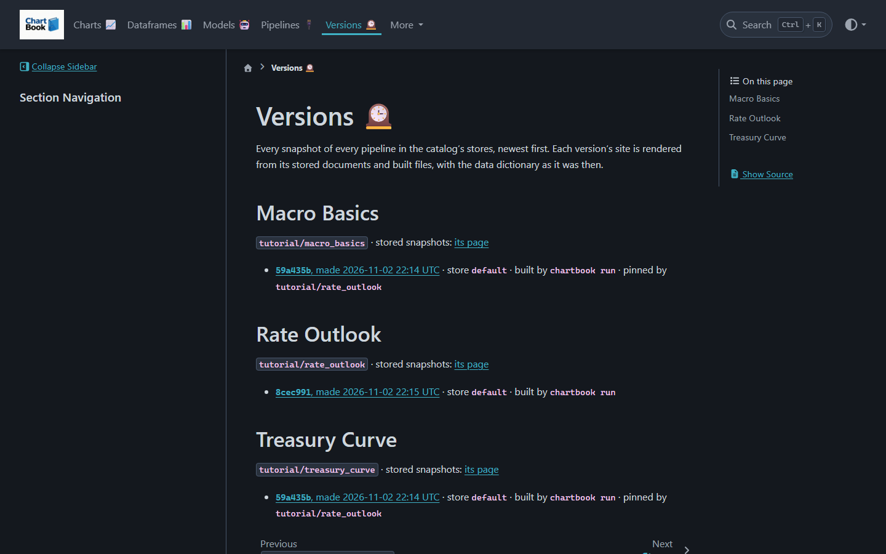

Explore a Catalog#
In fifteen minutes you will download a catalog of three pipelines that build on one another, browse it as your team would, follow a number back to where it came from, ask your agent about it, and build on one of its datasets from a pipeline of your own.


You need ChartBook installed, as in the Quickstart. The catalog is three pipelines:
Pipeline |
What it makes |
|---|---|
|
The Treasury yield curve, daily since 1961, and two charts of it |
|
Unemployment, inflation, payrolls and GDP growth, monthly, and two charts |
|
The term spread and a small model of it, built on the other two |
Every number in it is public data from the U.S. government (below).
1. Download the catalog#
The catalog comes as a store: a folder of each pipeline’s snapshots, everything one pipeline built at one commit, each file with its content hash. Download it, unzip it, and import it into the store on your machine:
curl -L -o chartbook-tutorial-store.zip https://github.com/backofficedev/chartbook/releases/download/v0.5.0/chartbook-tutorial-store.zip
unzip chartbook-tutorial-store.zip
chartbook store import chartbook-tutorial-store
curl.exe -L -o chartbook-tutorial-store.zip https://github.com/backofficedev/chartbook/releases/download/v0.5.0/chartbook-tutorial-store.zip
tar -xf chartbook-tutorial-store.zip
chartbook store import chartbook-tutorial-store
In PowerShell, curl alone is another command: write curl.exe.
curl -L -o chartbook-tutorial-store.zip https://github.com/backofficedev/chartbook/releases/download/v0.5.0/chartbook-tutorial-store.zip
tar -xf chartbook-tutorial-store.zip
chartbook store import chartbook-tutorial-store
tutorial/treasury_curve at 59a435b, made 2026-11-02T22:14:45.344819Z
tutorial/macro_basics at 59a435b, made 2026-11-02T22:14:54.791033Z
tutorial/rate_outlook at 8cec991, made 2026-11-02T22:15:25.533885Z
Imported 3 snapshot(s), 5.5 MB copied.
chartbook store import hashes every file as it copies it and checks it against the snapshot’s
record, so what you imported is byte for byte what each pipeline built.
2. Build it and open it#
A catalog is one site over every snapshot in your stores. Make one, the first time, then build it and open it:
chartbook catalog init --title "My Catalog"
chartbook catalog build
chartbook catalog open
(Already have a catalog that lists your default store? Skip catalog init: the import put the three pipelines there. If your default store is one your team shares, they will see the three pipelines too.)
Every pipeline, dataframe, chart and model has a page. Open Pipelines, then Rate Outlook: it says what it is, what it holds, and the exact snapshot of each pipeline it depends on.


3. Follow a number to its source#
Open Models, then Term Spread AR(1). Under Trained On: the yield curve, as pinned,
the snapshot at 59a435b. Under Inputs: the content hash of the exact bytes it read.


Follow the link to the dataframe, and from there to the pipeline that pulled it from the Federal Reserve Board. Each step is a page, and each page names the hash of what it was made from:


Versions lists every snapshot in the catalog, and which pipeline pins it. When
treasury_curve takes a new snapshot, the old one stays, and rate_outlook keeps reading it
until its owner moves the pin.


4. Ask your agent#
The same facts are on the command line, in a form an agent reads. Teach Claude Code about ChartBook once:
chartbook install claude-skill
Then ask it, in any folder: “What data do we have on Treasury yields, and what is built on it?” It lists the catalog,
$ chartbook ls --json
[
{"kind": "pipeline", "id": "tutorial/treasury_curve", "name": "Treasury Curve",
"description": "The Federal Reserve Board's zero-coupon Treasury yield curve, daily since 1961."},
{"kind": "dataframe", "id": "tutorial/treasury_curve:zero_coupon_yields", "name": "Zero-Coupon Treasury Yields", ...},
...
]
reads the write-up of what looks relevant, the same text as its page,
$ chartbook get-docs rate_outlook:model/spread_ar1
`spread[t+1] = intercept + slope * spread[t]`, fitted with NumPy on the first 80% of months and
scored on the rest. An example of the mechanics, not a forecast to act on: the point is that its page
says exactly which bytes of the yield curve it was trained on.
and answers from them. It reads only what it needs: a line per asset first, a write-up when one matters, the data itself last. Let Your Agent Use the Catalog says more.
5. Build on it#
Go back to the Quickstart’s my-pipeline, and depend on the yield curve:
chartbook add tutorial/treasury_curve
Added to [dependencies] in my-pipeline/chartbook.toml: "tutorial/treasury_curve" = {}
tutorial/treasury_curve: 3 pinned
From its snapshot at 59a435b, made 2026-11-02 22:14 UTC, which says it was made in https://github.com/backofficedev/chartbook, in store default.
Wrote chartbook.lock.
chartbook.lock now records the snapshot, and the hash of each asset in it. Read the data by
name, in any script of the pipeline:
from chartbook import data
yields = data.load("treasury_curve:zero_coupon_yields", format="pandas") # the pinned copy
It reads the same bytes on every run, on every machine with the store, until you run
chartbook update. And chartbook lineage walks what your pipeline is built on, checking each
hash on the way:
my_pipeline (this folder)
└── tutorial/treasury_curve: tutorial/treasury_curve 59a435b, made 2026-11-02 22:14:45 UTC, pins checked
1 snapshot(s) upstream; no gaps.
Commit chartbook.lock with your code: a git diff of it is how a reviewer sees that a pin moved.
What the data is#
Series |
From |
Pipeline |
|---|---|---|
Zero-coupon Treasury yields, 1 to 30 years (Gurkaynak, Sack and Wright, 2007) |
Federal Reserve Board |
|
Civilian unemployment rate ( |
Bureau of Labor Statistics, through FRED |
|
Consumer Price Index ( |
Bureau of Labor Statistics, through FRED |
|
Nonfarm payrolls ( |
Bureau of Labor Statistics, through FRED |
|
Real GDP ( |
Bureau of Economic Analysis, through FRED |
|
Each is a work of the U.S. government, in the public domain; FRED asks that its series be cited.
The data is as it was on the day the store was built; the pipelines that make it are in
examples/tutorial/, with
the script that builds the store.
Next#
Pins, the lockfile, chartbook update, and what CI checks.
What an agent runs, and how it decides what to trust.
A store on a shared drive or in S3, and one catalog over all of it.
chartbook run --snapshot declares a build ready for others to pin.